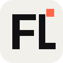
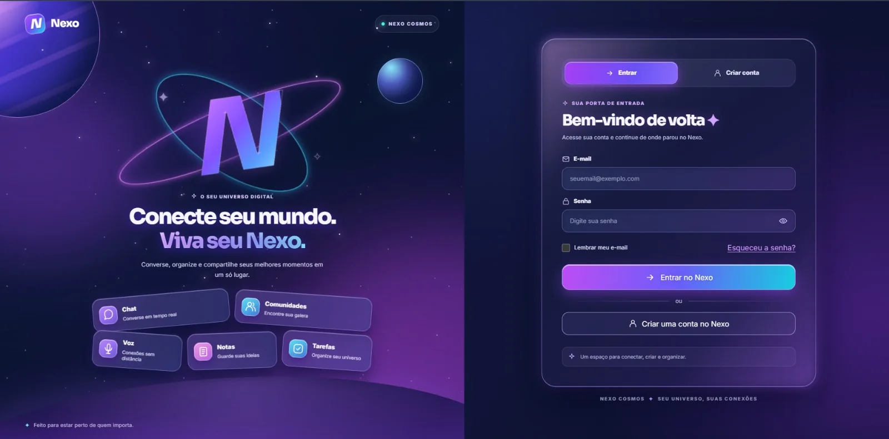

Um lugar, várias possibilidades
A proposta é reunir comunicação, organização e produtividade em um ambiente único, com identidade visual própria e navegação consistente.

FERNANDO LIMACOMUNICAÇÃO, CRIATIVIDADE E ORGANIZAÇÃO
O Nexo é um aplicativo multifuncional que integra comunicação em tempo real e organização pessoal em uma experiência digital própria.

O Nexo é um aplicativo multifuncional que integra comunicação em tempo real e organização pessoal em uma experiência digital própria.
A proposta é reunir comunicação, organização e produtividade em um ambiente único, com identidade visual própria e navegação consistente.
Frontend em React e TypeScript, backend com Node.js e Express, sessões para autenticação e MySQL para organizar informações por usuário.
Socket.IO para mensagens em tempo real, indicador de digitação e status de presença. Também há interfaces para comunidades, canais e chamadas.
Agenda com lembretes, anotações categorizadas, gerenciamento de tarefas e controle de gastos ampliam a utilidade do aplicativo.
O Nexo está em desenvolvimento contínuo, com melhorias constantes no design e nas funcionalidades para computadores e dispositivos móveis.
Abertura, identidade visual e formulário de autenticação
Capturas do projeto enviadas pelo desenvolvedor. Algumas informações pessoais foram ocultadas nas imagens do Nexo por privacidade.